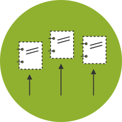
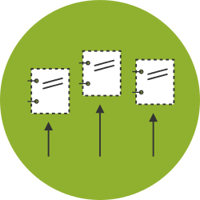

Estándar de Datos para las
Contrataciones Abiertas
Por Gabriela Rodriguez / DATA UruguayProceso de contratación
-

-

-
-

-

- Planificación ->
- Licitación ->
- Adjudicación ->
- Contratos ->
- Implementación
-
- 
-
-
- Planificación ->
- Licitación ->
- Adjudicación ->
- Contratos ->
- Implementación
¿Como se implementa el estándar de datos de contrataciones abiertas?
- Publicar información básica en la web.
- Publicar datos en formatos leibles por máquina.
- Estructurar datos usando estándar.
- Usar buenas practicas para publicar datos abiertos en la web.
- Enlazar a otros conjuntos de datos.
Release Package
Publicación con varios releases juntos.
- Un release es un archivo de publicación sobre un proceso de contratación.
- Es deseable que se publique lo más frecuente como sea posible. Tendremos muchos releases para un proceso de contratación que van a ser un historial de cambios del mismo.
- Release package es un conjunto de releases.
Release Package
Archivo con varios releases juntos.
{
"uri": "URI donde se publica.",
"publishedDate": "2015-04-15T12:35:06",
"publisher": {
"name": "Nombre de quien pública. String",
"uri": "https://www.df.gob.mx/contratos"
},
"releases": [],
"license": "https://www.df.gob.mx/licencia-de-datos-abiertos",
"publicationPolicy": "https://www.df.gob.mx/politica-de-publicacion"
}
Release
{
"ocid": "Identificador global del proceso de contratación",
"id": "1",
"date": "2015-04-15T00:00:00",
"tag": "contract",
"initiationType": "tender",
"planning": {},
"tender": {},
"buyer": {},
"awards": [],
"contracts": [],
"language": "es"
}
Identificadores
pegamento del proceso de contratación
OCID es un identificador global único usado en cada 'release' para identificar el proceso de contratación.
ocds-{prefijo}-{organismo publicador}-{identificador interno}
- Prefijo 'OCDS'
- Prefijo único registrado en la alianza para ciudad/país.
- Un nombre para el organismo que publica.
- Un identificador interno que se crea en el sistema usado e identificar el proceso de contratación en todas sus etapas.
Puntos Importantes que resolver
- Campos e identificadores: que publicar y como identificarlos consistentemente.
- Patrones de Publicación: usabilidad y frecuencia.
- Formatos de Publicación: esquema JSON, XLS, CSV.
- Mapeo de las diferentes fuentes de datos existentes.
- Es necesario extender el estándar para incluir algún caso de uso no considerado.
- Entender las necesidades de los usuarios de estos datos y que pueden aportar a la implementación.
- Usar herramientas para validar datos.
- Publicar y buscar mejoras.
Documentación en http://ocds.open-contracting.org
Discusiones de desarrollo en lista de correo standard-discuss@open-contracting.org y https://github.com/open-contracting/standard/issues
Presentación : http://gabelula.github.io/2015_condatos/ocds/Mesa de ayuda : data@open-contracting.org
Contacto: Gabriela Rodriguez [ gaba@datauy.org ]